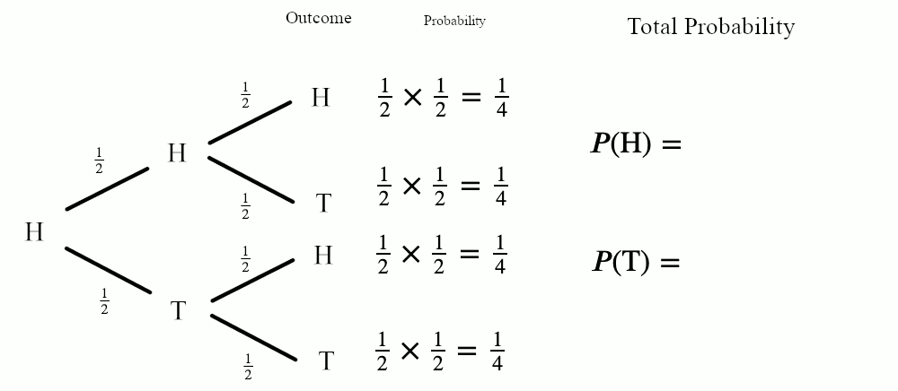
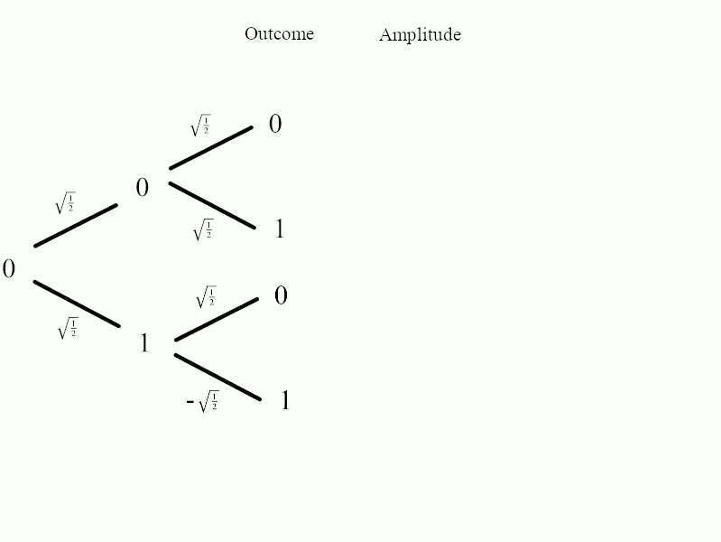

‘Quantum physics’ is a term widely used but much less understood. It is a mathematical model first used to describe the behavior of small things in a laboratory, which exposed gaps in the preceding theory of ‘classical’ physics. Quantum theory explains this behavior and gives us a more complete picture of our universe. We have realized we can use this previously unexplained behavior to perform certain computations that we previously did not believe possible. We call this quantum computing.
Quantum computing is the perfect way to dip your toes into quantum physics. It distills the core concepts from quantum physics into their simplest forms, stripping away the complications of the physical world. This page will take you on a short journey to discover (and explain!) some strange quantum phenomena, and give you a taste for what ‘quantum’ is.
Review of Classical Probability
To cover quantum phenomena, we need to first remind ourselves of 'classical' probabilities. In this sense, 'classical' just means pre-quantum, i.e. the normal probability trees you should have seen in school. If you're already familiar with this material, you should move through it quickly. If you're not so hot on this then don't worry- we'll only cover some of the simplest probability problems possible.
Probability Trees
You will hopefully remember probability trees from school. The idea is simple - we use a drawing to map out every possible eventuality and from this, we can calculate the chance of it happening.
Say we have a coin, and to start, we place it in the state Heads. If we then toss this fair coin and look at it, there is a 50% chance we will see Heads again, and a 50% chance of seeing Tails instead. We can plot this on a probability tree like so:
We draw the outcomes on the end of each branch, and the probabilities of each occurrence on the branches. Similarly, if we started in the state Tails and tossed the coin, we would have a 50% chance of seeing Heads and a 50% chance of seeing tails.
We can test this works by trying it. You can physically get a coin out, flip it many times, and record each result; you will eventually see roughly 50% of your results are Heads and 50% tails. Around 500 to 1000 tosses should be enough to get reliable results.
Experiment #1: Single Coin Toss
Too lazy to try this? Don’t worry! You can simulate the coin-tossing experiment by pressing the Toss Coin button below to simulate a coin toss and store the results. You can change the initial state to 'Heads' or 'Tails', or increase the number of coins (No. of Coins) slider to get many results quickly. Click Reset to discard your results and start again.
Going Further
It looks like our probability tree model correctly predicts the results of our experiments. We can go further and chain our probability trees together to predict the outcomes of chains of events. For example, let’s say we start in the state Heads, toss the coin, then toss the coin again, what would we see? We can work it out using the trees:
You may remember from school that we multiply along the branches to calculate the probability of each combination of events:

We then add the results together to calculate the probability of each outcome:

And we can see the probability of seeing Heads after these two tosses is 50%, and the probability of seeing Tails after these two tosses is also 50%.
Experiment #2: Double Coin Toss
As with before, you can simulate the coin-tossing experiment by pressing the Toss Coin Twice button to simulate two coin tosses and store the final result. You can change the initial state, or change the No. of Coins to get many results quickly. Click Reset to discard your results and start again.
With enough tosses, our results are as expected: Equal chance of measuring Heads or Tails.
The Quantum Coin
Now we have a complete description of the classical coin, it’s time to introduce a quantum ‘coin’. Our quantum coin is called a ‘qubit’.
A qubit is something you can only play with in a lab, as they are very difficult to manipulate. Many years of scientific and technological advancements have gone into creating the qubits we have today, but the beauty of learning through quantum computing is that we can ignore the physical complications and just remember that when we measure a qubit, it will be in one of two states: Instead of the two states Heads and Tails, we call our qubit’s two states 0 and 1.
Experiment #3: The Quantum Coin Toss
Let’s experiment with our quantum coin and see how it behaves. We’re going to do a quantum toss, measure the state of our coin, and record it. This is just like the classical coin toss in the section above.
We’re going to try and describe our quantum coin using probability trees. This looks like, from a 0 state, the coin toss gives us a 50-50 chance of measuring 0 or 1. Let’s plot this on a tree as we did with the classical coin:
And similarly, it looks like from a 1 state, the coin toss gives us a 50-50 chance of measuring 0 or 1. The probability tree looks like this:
Experiment #4: The Double Quantum Coin Toss
We now have a model that predicts the behaviour of the quantum coin. Like good scientists, we now want to test it on new scenarios and see if it holds up. Let’s try the double coin toss as we did before. Just like the classical coins, our model of the quantum coin predicts a 50-50 chance of measuring 0 or 1, regardless of which state we start in:
So let’s try it! We’re going to toss the quantum coin twice:
Hmm… this is an unexpected result. Let's see what happens when we set the initial state to 1:
This doesn't match our prediction at all! Our model has failed us! This is the same problem that physicists encountered in the early 20th century. Searching for the answer led to the development of quantum physics, which is what we will use to describe our quantum coin toss.
The Quantum Model
In short, quantum theory is probability theory with negative numbers.
What does this mean? We can’t have negative probabilities as that doesn’t make sense. To accommodate this, we use a new quantity we call amplitudes and plot these on trees instead. To get around the fact that we cannot have negative probabilities, and that all our probabilities must add up to 1, we use a mathematical trick: We square our amplitudes to calculate the probabilities.
Let’s see an example. The amplitude trees for our single quantum coin toss look like this:
We can see that starting in the state 0, the quantum coin toss assigns equal amplitudes to both outcomes. When we square these amplitudes, they give us the correct probability of measuring 0 or 1 (50-50 chance). How did we know that the amplitudes were $\sqrt{\tfrac{1}{2}}$? Because they're the values that give us the right answers!
Starting in the state 1, the amplitude tree is different:
Here we can see our first negative number appearing in the amplitude of the 1 outcome. When we square our amplitudes to calculate the probabilities, this negative sign disappears (remember that a negative times a negative is a positive), and we see the 50-50 chance we measured above. The interesting result is when we chain these probabilities together.
Explaining the Double Quantum Coin Toss
Just like with classical probability, we multiply our amplitudes along the branches to calculate the amplitude of each outcome:

And to work out the probability of measuring each outcome, we add these amplitudes together, and then square them:

We can see the amplitudes of finding the coin (qubit) in the state 1 cancel each other out, and we call this effect interference. You should verify for yourself that this model works when the initial state is 1.
What is Quantum Computing?
This is cool, but how is it useful? It turns out that these interference effects can be used to our advantage; we can combine operations such as the quantum coin toss to build more efficient algorithms. These algorithms can use interference effects to make the wrong answers cancel out quickly and give us a high probability of measuring the right answer. This is the idea behind quantum computing.